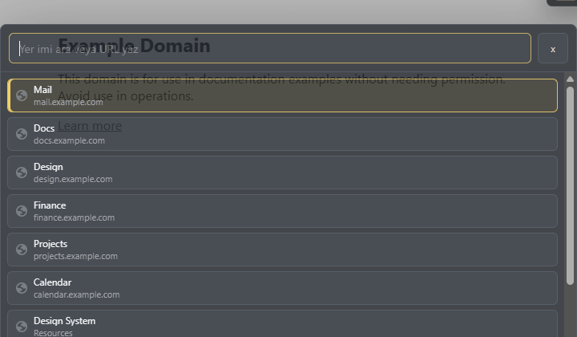
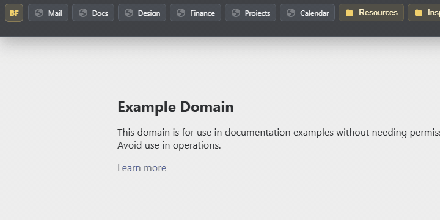

No separate import is needed; BookmarkFlow uses your existing Chrome bookmarks.
BookmarkFlow Bar
Set up your workspace in one minute
BookmarkFlow reads your own Chrome Bookmark Bar. Bookmark content never leaves your browser.
Display, color, and per-site visibility settings stay in Chrome storage.
Search, visibility, and streamer mode are available from keyboard shortcuts.
Profile
Choose your workflow
Shortcuts
Quick start
Search paletteCtrlShiftE
Expand / collapse barAltShiftB
Hide / restoreAltShiftH
Streamer modeAltShiftM
Feature tour
BookmarkFlow in motion

Expand / collapse bar
Open the bookmark bar only when you need it, using BF or the shortcut.

Search palette
Start typing, move with the arrow keys, and press Enter to open a result.

Folder rail
Keep folders in a dedicated rail while direct bookmarks stay in the horizontal strip.

Streamer mode
Switch to icon mode during videos, presentations, and client calls.

Context actions
Rename, reorder, move, or delete bookmarks without leaving BookmarkFlow.